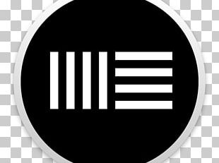
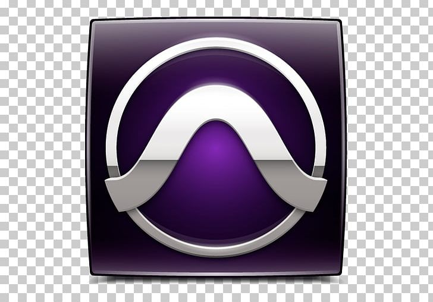
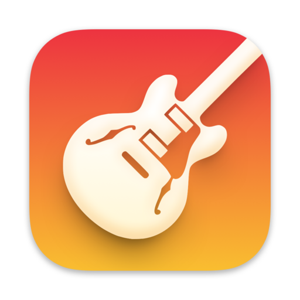
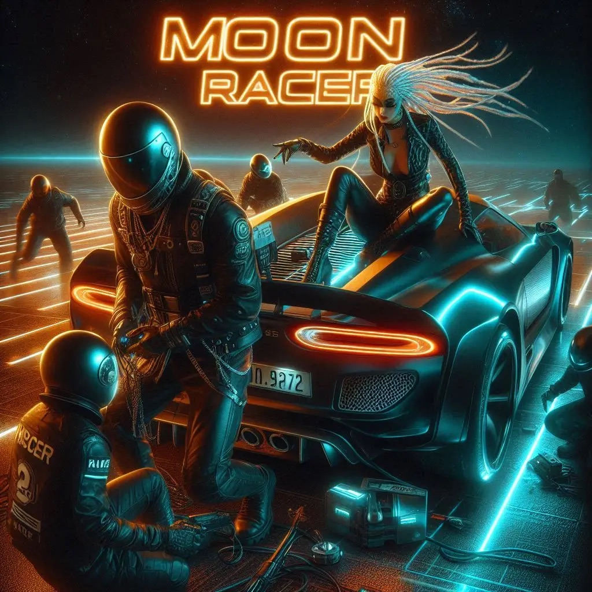
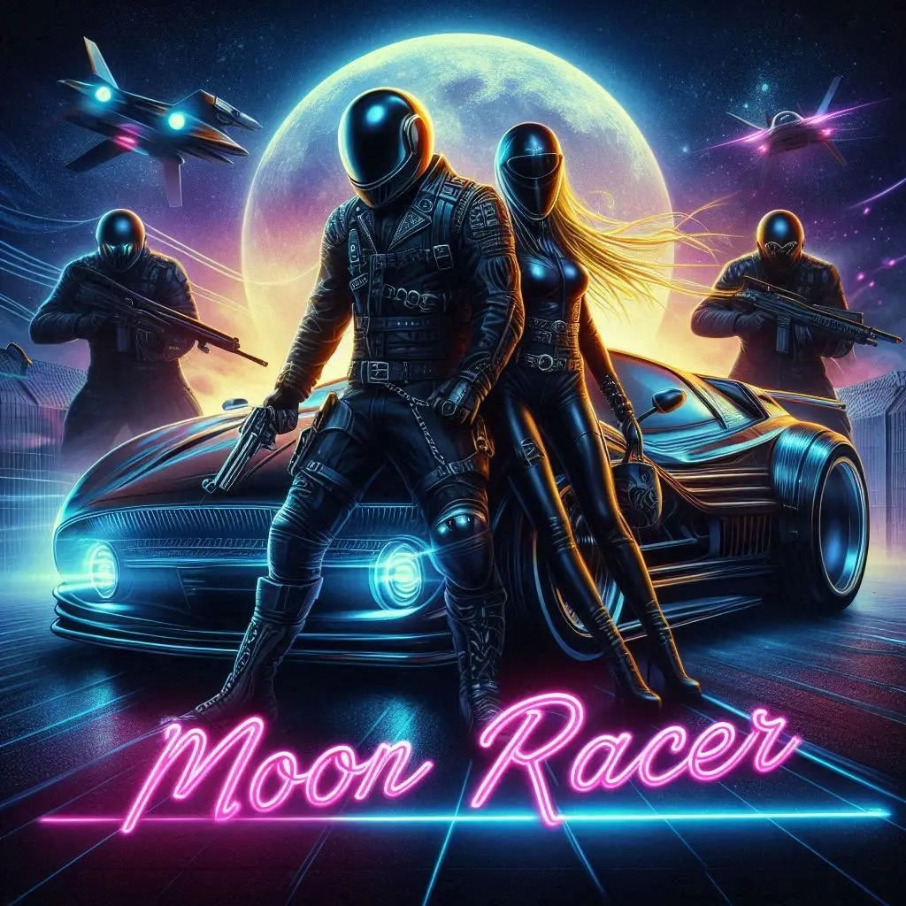
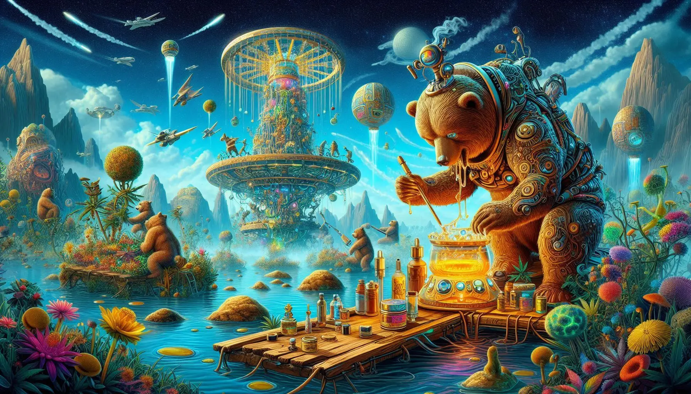

This is my Technology stack









Rise of the Moon Racers is a gritty, high-stakes odyssey that follows an Earth-born soul survivor as they navigate a hostile, cyberpunk Mecca, evolving from a displaced outsider into the leader of a revolutionary digital gang. By recruiting three specialists to execute high-tech heists and black-market disruptions against a tyrannical Republic, the album mirrors today’s underground DIY culture and the modern struggle against corporate gatekeeping. It taps into the current zeitgeist of digital activism and the "hustle-to-survive" mentality, blending the escapism of a Metaverse setting with a raw, relatable fight for autonomy and civil rights. Much like the modern independent music scene, the Moon Racers prove that those pushed to the fringes are often the ones with the power to hack the system and rewrite the future.

House of Rager serves as the dark, psychological successor to the initial revolution, capturing the moment the adrenaline of the "Moon Racer" lifestyle curdles into a harsh reality check. This album dismantles the reckless, "no-consequences" party mentality of the metaverse’s underground, diving headfirst into the shadow side of the rebel persona. It’s the sound of the paradigm crumbling—where the neon lights fade to reveal the cold steel of a protagonist who has traded youthful hedonism for a hardened, protective edge. Through themes of accountability and dark personality traits, the project marks a transformation into a "helpful energy" wrapped in a tough, impenetrable exterior, reflecting the modern shift in music from mindless hype to the raw, visceral exploration of mental health and personal growth. The album resonates with today's listeners who are moving past the "clout" era and toward a more grounded, authentic self-awareness, mirroring the industry's pivot toward gritty realism and the "anti-hero" narrative.

The protagonist is a sanitation worker whose job is to clean the city's streets. They discover that the entire metropolis is a single, massive conscious being that is slowly forgetting its identity, causing it to fall into disrepair. The plot revolves around communicating with the city's dying consciousness and restoring its memories, which exist as ethereal projections within the infrastructure. The storyline develops when the protagonist leaves his job to join a group of scientist, bears that aid the consciousness of the planet by growing a resource (x) that is used as fuel for the planet’s consciousness. The protagonist lives in an outcast village on the outskirts and is quick to learn the sophisticated technology and culture of this Mecca hub. The protagonist becomes key in restoring the planets consciousness and makes some friends along the way. Reality bends at every turn, As the planet realigned itself the bears travel through space and time and must find how to bring harmony to this mystical mystery.